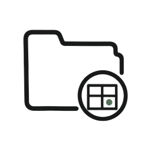
实验数据 dataset.csv
Natural language research
OPENSCIENCE DESKTOP
Reproducible artifacts
 Your AI research workspace for evidence-backed science
Your AI research workspace for evidence-backed science
正在算数据...
正在写报告...
NEW RESEARCH SESSION
用自然语言启动科研工作
新会话页是第一入口：把问题、数据、文件和项目上下文交给 OpenScience，后续自动沉淀为可追溯 artifact。
自然语言任务
分析这批实验数据，生成一份可以复现、可以审查、可以继续迭代的研究报告。
Work in a project
启动
本地执行
Artifact 留痕
项目继续推进
EVIDENCE COVERAGE
Start with the evidence base researchers already trust.
Search sources, open references, cite passages, and keep each claim connected to the material that supports it.
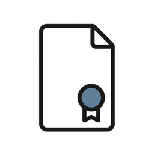
225K+ regulatory documents searchable, readable, citable, traceable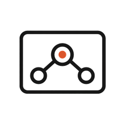
1M+ clinical trials searchable, readable, citable, traceable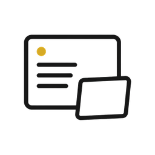
150M+ research abstracts searchable, readable, citable, traceableEVIDENCE-BACKED SCIENCE
OpenScience turns AI conversations into research artifacts you can reproduce, review, and defend.
Not a single answer. A durable research record: evidence, code, figures, notebooks, manuscripts, and every step that produced them.
SCIENCE MODE
One workspace for all sciences: from molecules to manuscripts, from genomes to causal inference.
10+ research domains and 350+ default skills across life sciences, drug discovery, engineering computation, data science, and social research.
10+ domains
350+ skills
reproducible artifacts
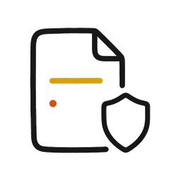
Chemistry & drug discovery Molecules · proteins · evidence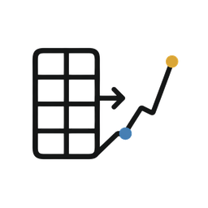
Data science Statistics · econometrics · causal inference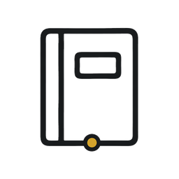
Policy & social research Surveys · qualitative study · reports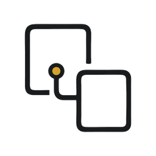
Artifact record Run · trace · reproduceWORKSPACE MOTION
Evidence, analysis, and artifacts move together.
A research request becomes a living project, not a loose chat transcript.
RESEARCH FLOW
A report you can scroll, inspect, and cite.
Ask a question. OpenScience returns an evidence-backed report with claims, citations, and review notes in one place.
Answer
Evidence
Citations
Review
Medical evidence report
Evidence synced
Evidence mode
14m 09s
Anaphylaxis: epinephrine, second-line therapy, and observation time
First-line action: give epinephrine promptly. Do not wait for antihistamines or steroids to work.
Key treatment path
- Airway, breathing, circulation, oxygen, IV access, and fluids are handled in parallel.
- Antihistamines and steroids are supportive, not substitutes for epinephrine.
- Observation time depends on severity, comorbidities, and recurrence risk.
Evidence notes
The conclusion keeps dosage and workflow boundaries explicit, so clinicians can verify sources before use.
OpenScience research workflow
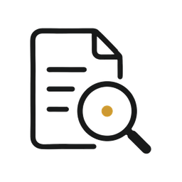
01Search evidence, then run the analysis.
OpenScience connects source passages, local files, code execution, and figure output inside one project.
Query
cross-species single-cell RNA-seq integration
Sources opened · key passages attached · claim anchors saved
Notebook
load matrix → fit model → export figure
02
Keep the project record, not just the answer.
Data, evidence, code, figures, notes, and manuscript drafts stay together so the project can continue later.
03
Review the claim before it ships.
Citations, numbers, figure steps, and conclusion boundaries remain visible for inspection and defense.
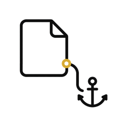
References checkedsource paragraph attachedRESEARCH MODES
Choose a mode. Get a project.
Each mode is a shortcut into the same artifact-first workspace.
Scientific research
Medical evidence
Goal mode
Knowledge deposition
Evidence, data, code, figures, manuscript.
PICO, grading, citations, caution.
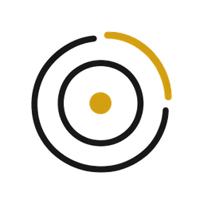
Goal modePlan, checkpoints, progress, continuation.
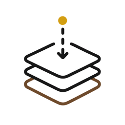
Knowledge depositionSOPs, methods, reusable skills.
claim linked to source paragraph
figure linked to code and data
report ready for review
PROJECT EXAMPLES
Search evidence. Run analysis. Ship reproducible science.
From evidence to code, from figures to manuscripts, the whole project stays traceable.
Search sources, bind citations, draft the review.
Run code, make figures, keep the trail.
Track claims, corrections, figures, and decisions.
CAPABILITY STACK
Research work, organized as artifacts.
Evidence, code, figures, notes, and manuscripts stay in one project record.
01
Evidence
DOWNLOAD
Install where your research happens
Choose your system. The desktop app checks for updates automatically.
macOS
Apple Silicon 与 Intel Mac
等待发布包上传
Windows
x64 与 ARM64 安装包
等待发布包上传
Linux
DEB / RPM / AppImage
等待发布包上传
FAQ
Questions researchers ask first
Is OpenScience a new model?
No. It is a desktop research workspace around your model, files, tools, and artifacts.
Can it work with the files I already have?
Yes. It reads project files, runs analysis, and links outputs to code and data.
What does traceable mean?
Results keep the evidence, code, environment notes, and edits that produced them.
UPDATE FEED
自动更新源
这些 metadata 供客户端自动检查版本；绿色表示该平台已有可用更新源。